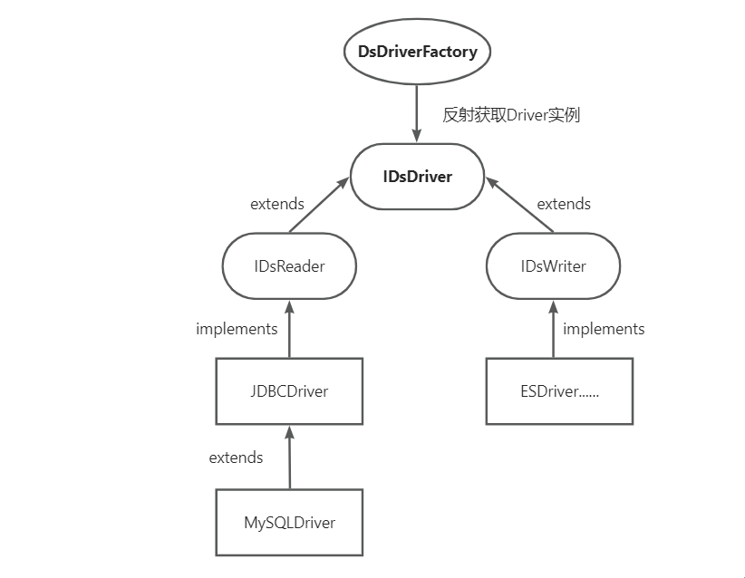
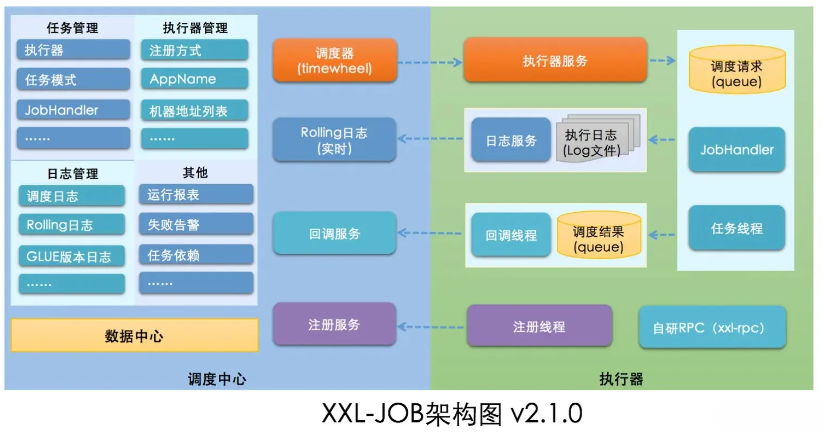

DatalinkX
DatalinkX 是一个基于 Flink 的异构数据源流转服务，用来作为数据源之间的数据同步工具，通过抽象异构数据源驱动加借助 FlinkX 开源组件屏蔽数据源间不同的通信协议，通过页面化配置数据同步任务的方式简化数据库同步流程，并通过 Xxl-Job 组件实现定时调度。
# 模块设置
- 业务数据管理模块：负责管理数据源和同步任务的增删改查。包含数据源管理、任务管理等。
- 同步任务管理模块：借助 xx1-job 实现任务调度管理，确保异构数据源的定时同步和实时更新需求，同时支持批量任务管理，提高任务调度的效率。
- RPC 通信模块：利用 Retrofit2 实现分布式服务间的 RPC 调用，提供高效的数据请求和响应机制支持各模块间的数据传输和服务调用。
- 数据源驱动模块：负责异构数据源的驱动配置，兼容多类型数据源的连接、读取和写入操作，为业务数据管理和同步提供支持。
- 消息通道模块：采用 Redis Stream 实现分布式消息队列，保障各模块间的消息通信效率和数据传 5.
输的可靠性。 - 实时刷新前端模块：通过 SSE 技术实现数据的实时推送，配合 Ant Design 在前端即时刷新数据提供用户友好的动态体验。
- 公共模块：包含系统基础功能、工具方法和通用接口，实现各模块间的共享，提升系统的可维护性和复用性。
- FlinkX 模块：负责人规模数据的实时同步、数据清洗和格式转换，支持流式和批量数据的整合处理，为系统提供数据支持。
数据清洗与转换模块：基于 Flinkx 的清洗能力，对不同数据源的数据进行标准化、过滤和转换以确保进入系统的数据一致性。
# 重要模块
-
# 消息队列 + SSE 实现实时推送
- 首先基于自定义注解 @messageHub 标注消费者方法，在程序运行初始化完 Bean 之后，实现对每个 Bean 进行循环检查，寻找带该注解的方法，找到后将其注册成消费者。
- 基于 Redis 的 stream 数据结构实现轻量级的消息队列，出于两点原因选择该方式，首先是本项目只需要使用消息队列实现任务状态和任务进度的推送，不需要严格意义上的高可用、低延迟，其次是 RabbitMQ 或者是 Kafka 服务的复杂性，一个健壮的项目并不是引入越多的中间件会越好，而是 Bug 越少越好，或者说出 Bug 概率越低越好。而 Redis 的 stream 借助了很多 Kafka 的设计思路，而且更轻量级。
- 消费者的注册，其实是非常简单的一件事，只需要带有 @messageHub 的，就创建一个线程监听注解中配置的消息地址，监听到消息后回调给该消费者，并返回 ACK 标记消息已被消费，如果在消费过程中出现故障，则会继续在 pending 队列中消费，一般会重试 4 次，如果消费不了，只能是放弃，因为这并不是一个十分重要的操作，丢失部分进度消息是用户能够接收的。
- 基于 SSE 实例实现消息实时推送，SSE 是使用流信息向浏览器进行信息推送，也就是信息不是一次性的，而是连续不断的，类似于视频的播放。SSE 是一个单向通信，只能服务器向浏览器发送，这里不选择 websocket 的原因和 2 一样，基于业务层面去考虑。
-
# 抽象数据源 Driver 设计
该项目是支持异构数据源同步的，所以会有很多种数据源，进行每种数据源连接是确实可以使用 if else 去定义，但是这并不好维护，而且可拓展性十分差，想象一下每次新增一个数据源就写多一个 if else，代码的可读性也会很差，所以这里会基于模板模式和工厂模式对数据源驱动的获取进行抽象。
我们把数据源实例抽象为几个步骤，读写分离，然后分别定义为接口，将支持 JDBC 的数据源做一种实现，不支持 JDBC 的数据源也做一种实现。每种实现又有一个基础类去实现基础功能。
如下图所示：

-
DsDriverFactory 遵循工厂设计原则，每个数据源必要信息通过压缩算法返回一个唯一字符串 connectld，DsDriverFactory 向外暴露 getDsReader、getDsWriter 方法，通过解析 connectld 得到数据源 type，根据数据源 type 获取对应 Driver.class 并通过反射生成对应的驱动对象。
-
要新增数据源，比如新增一个 Mysql 的数据源，那么只需要继承 JDBC 这个类，JDBC 这个类已经实现了部分基本的功能，并制定了相应的执行流程，Mysql 继承之后，只需要把获取数据源 JdbcUrl 这种每个数据源都不同的抽象方法给实现了就行。
-
总体流程就是，用户提交了注册新数据源的信息之后，注册信息会存入数据库中，等到创建流转任务时，会获取数据源下的数据表，这时就调用 DsDriverFactory 获取数据源实例，并调用实例中的方法获取对应的数据 / 写入数据。
1
2
3
4
5
6
7
8
9
10
11
12
13
14
15
16
17
18
19
20
21
22
23
24
25
26
27
28
29
30
31
32
33
34
35
36
37
38
39
40
41
42
43
44
45
46
47
48
49
50
51
52
53
54
55
56
57private static final String PACKAGE_PREFIX = "com.datalinkx.driver.dsdriver.";
private static String getDriverClass(String driverName) {
return PACKAGE_PREFIX + driverName.toLowerCase() + "driver" + "." + ConnectIdUtils.toPascalCase(driverName) + "Driver";
}
//getDriver 方法依赖于 ConnectIdUtils 和 getDriverClass 方法来确定应该加载和实例化哪个驱动类。
public static IDsDriver getDriver(String connectId) throws Exception {
String dsType = ConnectIdUtils.getDsType(connectId);
//拼接地址，也就是包的地址，来获取对应的类名，并返回给DsServiceImpl类，让他知道用的是哪个实现类，这就是用来替代无数个if else的关键地方
String driverClassName = getDriverClass(dsType);
Class<?> driverClass = Class.forName(driverClassName);
Constructor<?> constructor = driverClass.getDeclaredConstructor(String.class);
return (IDsDriver) constructor.newInstance(connectId);
}
public static IStreamDriver getStreamDriver(String connectId) throws Exception {
String dsType = ConnectIdUtils.getDsType(connectId);
String driverClassName = getDriverClass(dsType);
Class<?> driverClass = Class.forName(driverClassName);
Constructor<?> constructor = driverClass.getDeclaredConstructor(String.class);
return (IStreamDriver) constructor.newInstance(connectId);
}
public static IDsReader getDsReader(String connectId) throws Exception {
/**
* getDriver(connectId) 返回的是一个 IDsDriver 类型的对象，然后将其强制转换为 IDsReader 类型。这种转换能够成功执行的前提是：
* IDsReader 接口继承自 IDsDriver 接口：如果 IDsReader 接口是 IDsDriver 接口的子接口，那么所有的 IDsReader 实现也必然是 IDsDriver 的实现。
* 这种情况下，转换是合法的，因为 IDsReader 是 IDsDriver 的子类型。
* 实现类的兼容性：调用 getDriver(connectId) 方法返回的具体实现类必须同时实现了 IDsDriver 和 IDsReader 接口。这是类型转换能够成功的关键。
*/
try {
try {
return (IDsReader) getDriver(connectId);
} catch (InstantiationException | IllegalAccessException | InvocationTargetException e) {
log.error("driver load error", e);
}
} catch (NoSuchMethodException e) {
log.error("driver load error", e);
}
throw new Exception("can not initialize driver");
}
public static IDsWriter getDsWriter(String connectId) throws Exception {
try {
try {
return (IDsWriter) getDriver(connectId);
} catch (InstantiationException | IllegalAccessException | InvocationTargetException e) {
log.error("driver load error", e);
}
} catch (NoSuchMethodException e) {
log.error("driver load error", e);
}
throw new Exception("can not initialize driver");
}
-
-
# XXL-Job 平台
xxl-job 是一个分布式任务调度平台，核心思想是将调度任务抽象成为调度器和执行器，平台本身不承担业务逻辑，只负责发起调度请求后，由执行器接收调度请求并执行任务，这里的任务被抽象为分散的 JobHandler。JobHandler 分散到各个业务代码中，依 netty 保持与调度器的交互，通过这种方式即可实现调度与任务相互解耦，从而提高系统整体的稳定性和拓展性。如下图：

-
调度器只需要借助 maven 打包 xxl-job 的 admin 即可，然后 java -jar 把 jar 包运行起来即可，或者是用 docker 直接部署，而执行器则放在项目中的 Job 模块下，使用 @XxlJob (“XXX”) 在方法上定义执行器即可
-
为了解决 xxl-job 登录的问题，这里会使用一个拦截器，拦截器逻辑非常朴实无华，在发请求之前，判断 cookieValue 是否存在，如果不存在就通过 datalinkx-client 的能力发起一次登录请求。登陆后保存 cookie 加到原请求中。
1
2
3
4
5
6
7
8
9
10
11
12
13
14
15
16
17
18
19
20
21
22
23
24
25
26
27
28
29
30
31
32
33
34
35
36
37
38
39
40public Response intercept(Chain chain) throws IOException {
Request request = chain.request();
Response response;
try {
if (StringUtils.isEmpty(cookieValue)) {
retrofit2.Response loginResp = xxlLoginClient.login(username, passwd, "on").execute();
cookieValue = loginResp.headers().get(SET_COOKIE_HEADER);
}
if (StringUtils.isNotEmpty(cookieValue)) {//检查是否成功获取了 Cookie 值
//如果获取了 Cookie，则创建一个新的请求，将 Cookie 添加到请求头中
Request newRequest = chain.request().newBuilder()
.addHeader(HEADER_COOKIE, cookieValue)
.build();
//使用新的请求继续执行链式调用，获取响应
//当前拦截器已经完成了对请求的处理，将请求传递给拦截器链中的下一个拦截器继续处理
// 最后一个拦截器处理请求后，不再调用 proceed，而是直接将请求发送到服务器。服务器的响应返回，按相反顺序通过拦截器链。
response = chain.proceed(newRequest);
} else {
log.error("xxl-job login error");
response = chain.proceed(chain.request());
}
} catch (Exception e) {
throw e;
}
if (response.code() == 200) {
ResponseBody responseBody = response.body();
MediaType contentType = responseBody != null ? responseBody.contentType() : null;
if (contentType != null && contentType.subtype().equals("json")) {
String bodyString = getBody(response);
bodyString = bodyString.replaceFirst("\"result\":\\s*\"\\s*\"", "\"result\": null");
ResponseBody body = ResponseBody.create(contentType, bodyString);
response = response.newBuilder().body(body).build();
}
}
return response;
}
-
-
流转任务的生命钩子函数设计
通常的模板方法模式中会设计一个 abstract 的抽象方法，交给它的子类实现，这个方法称为模板方法。而钩子方法，是对于抽象方法或者接口中定义的方法的一个空实现，也是模板方法模式的一种实现方式。设计钩子方法的主要目的是干预执行流程，使得控制行为流程更加灵活，更符合实际业务的需求。在该项目流转任务的生命周期都是基于钩子方法 + 模板实现的，任务由 xxl-job 调度中心通过 netty 回调到 DataTransHandler 执行器中，执行器中注入任务触发类 DataTransferAction，由 doAction 开始一次任务的执行，而 FlinkAction 是继承的 AbstractDataTransferAction 实现各种模板和钩子方法:
六个钩子方法：
1
2
3
4
5
6
7protected abstract void begin(D info);
protected abstract void end(D info, int status, String errmsg);
protected abstract void beforeExec(U unit) throws Exception;
protected abstract void execute(U unit) throws Exception;
protected abstract boolean checkResult(U unit);
protected abstract void afterExec(U unit, boolean success, String errorMsg);
protected abstract U convertExecUnit(D info); doAction 串联生命周期：
1
2
3
4
5
6
7
8
9
10
11
12
13
14
15
16
17
18
19
20
21
22
23
24
25
26
27
28
29
30
31
32
33
34
35
36
37
38
39
40
public void doAction(T actionInfo) throws Exception {
// 获取job详情
D detail = getJobDetail(actionInfo);
try {
StringBuffer error = new StringBuffer();
// 准备执行job
begin(detail);
// ....
// 遍历执行启动flink任务
try {
// 每个单元执行前的准备
if (isStop()) {
log.error("logkill trigger");
throw new InterruptedException();
}
beforeExec(unit)
// 启动任务
execute(unit);
} catch (InterruptedException e) {
log.error("user stop", e);
throw e;
} catch (Throwable e) {
log.error("execute flink task error.", e);
unitCount.decrementAndGet();
afterExec(unit, false, e.getMessage());
error.append(e.getMessage()).append("\r\n");
}
// 整个Job结束后的处理
end(detail, error.length() == 0 ? JOB_STATUS_SUCCESS : JOB_STATUS_ERROR, error.length() == 0 ? "success" : error.toString());
} catch (InterruptedException e) {
log.error("Stop task by user.");
JobUtils.cntx().setCanceled(true);
end(detail, JOB_STATUS_STOP, "cancel the job");
throw e;
} catch (Throwable e) {
log.error("sync failed", e);
end(detail, JOB_STATUS_ERROR, e.getMessage());
}
} 这个方法可谓是整个 datalinkx 的灵魂，核心中的核心，最核心的代码，我们通过这个方法将一个流转任务的生命周期串联起来。
这样真正的实现类 DataTransferAction.java 只需要继承 AbstractDataTransferAction 实现各个具体的生命周期方法即可，Xx1-Job 回调来的方法直接调用 FlinkAction 继承的 doAction 方法即可将任务串联执行。